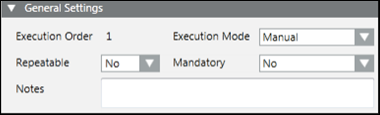
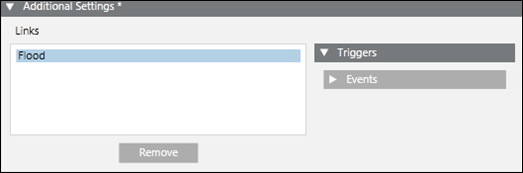
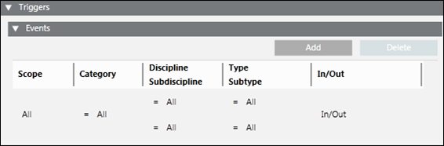

Notification Operating Procedure Steps
Operating procedures represent Assisted Treatment workflows for events occurring in the system. Operating procedures are triggered by events that match certain criteria defined in operating procedure templates. An operating procedure template is a structure that contains pre-configured list of operating procedure step templates. Each step template contains instructions and operating tools.
Operating procedures are configured in Engineering mode and displayed/managed in Assisted Treatment.
Notification provides an operating procedure step template called Initiate Notification Incident that can be associated with an existing incident template. This step template can be used in combination with other step templates to build operating procedure templates. When an event triggers such an operating procedure template, initiating an incident becomes part of the resulting operating procedure workflow. An Initiate Notification Incident step allows for initiation of incidents either manually or automatically, depending on the configured step execution mode.
NOTE: It is possible to send the graphics associated with the event source as a other file content message content to Notification devices using operating procedures.
There are three step execution modes:
- Manual - The operator must manually initiate the incident using the user interface.
- Automatic on creation - The system automatically initiates the configured incident template without user interaction as soon as an event triggers the creation of an operating procedure.
- Automatic on first treatment - The system automatically initiates the configured incident template when an operator starts the first manual step in an operating procedure triggered by an event at an earlier point in time.
For information on the Notification Operating Procedure Steps, see step-by-step section.
Notification Operating Procedure Steps Workspace
This section describes the Operating Procedures workspace in the Primary pane in order to create, update or delete Initiate notification incident step templates.
Operating Procedures are maintained under Project > System Settings > Operating Procedures.
To create an initiate notification incident step template, first create a new operating procedure template and then create a new step notification incident.
You can create a new operating procedure template or a folder by selecting New in the toolbar and selecting either New Operating Procedure Template or New Operating Procedure Folder.
in the toolbar and selecting either New Operating Procedure Template or New Operating Procedure Folder.
After a new step notification incident is created, the Operating Procedures tab displays. Along with the toolbar controls, it contains following expanders:
Toolbar | ||
Icon | Name | Description |
| Save Data | Saves the operating procedure settings. |
| Delete Current Object | Deletes the selected operating procedure. |


General Settings
The General Settings expander allows you to configure the general parameters of the operating procedure.

- Execution order: Indicates the step execution order in an operating procedure.
- Execution mode: Select the execution mode. Choose one of the following options:
- Manual
- Automatic on creation
- Automatic on first treatment
- Mandatory: Define whether a step is mandatory.
- Repeatable: Define whether a step can be repeated.
- Notes: Enter any comments.
Additional Settings
The Additional Settings expander allows you to define the links and associate events to the link necessary to initiate the operating procedure step.

- Links: Allows you to drag a template (incident template, message template) from the System Browser and set up event conditions for that.
- Triggers: Allows you to access configure additional conditions to initiate the incident. Expand to view the Events expander where you can configure event conditions for the step.
- Events: Allows you to configure additional event rules for conditional execution of the step in operating procedures. Refer to the image and table below for more information.
- Remove: Allows you to delete the template from Links.
The Events expander under the Triggers expander displays as shown in the following image:

- Scope: Assign a scope.
- Category: Filter the category of the Event.
- Discipline: Filter the discipline of the Event source.
- Subdiscipline: Filter the sub discipline of the Event source.
- Type: Filter the object type of the Event source.
- Subtype: Filter the sub-object type of the Event source
- In/Out: Allows you to select whether the step is triggered by incoming or closed Events or both. The trigger is executed if the event condition is verified for the objects within the scope/target that match the selected value.
- Add: Allows you to add more event configurations for the step.
- Delete: Allows you to delete an event configuration of the step.